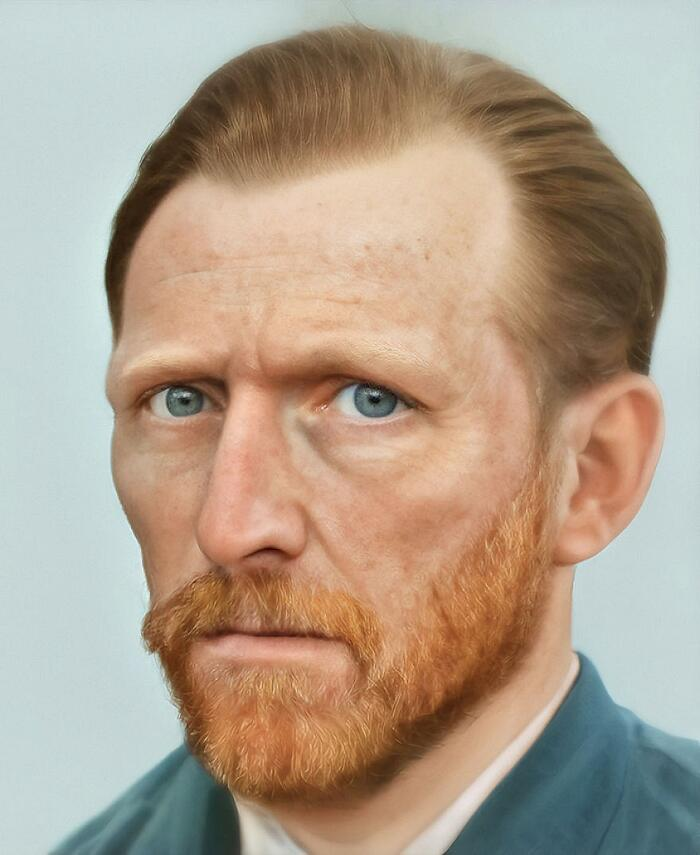
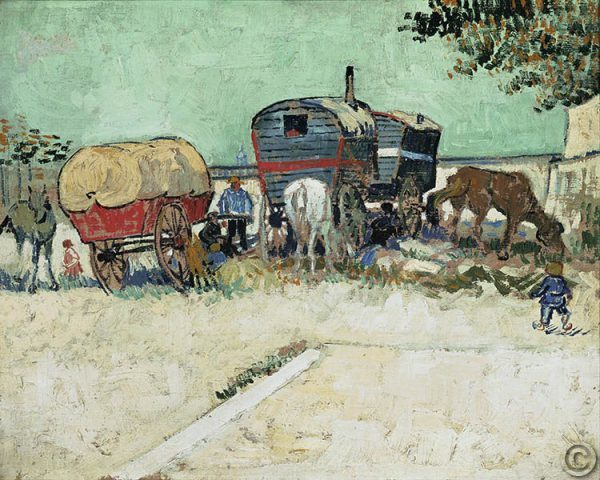
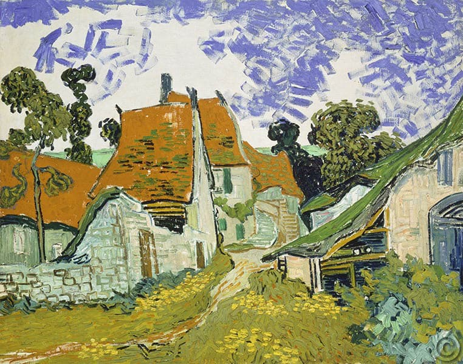
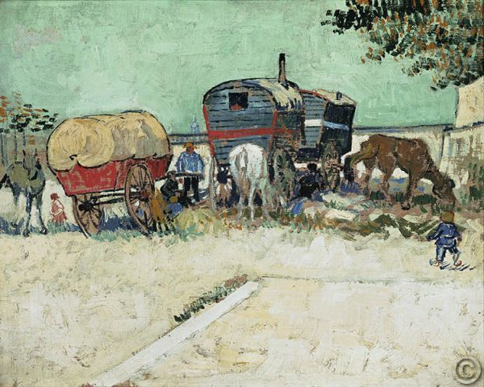
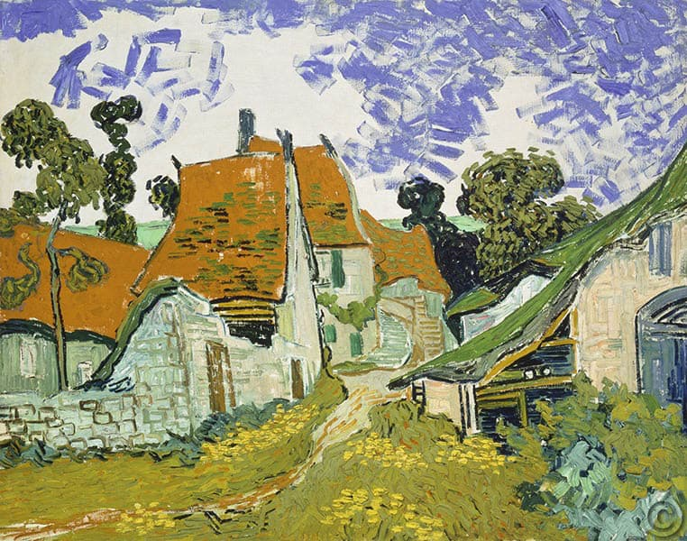

Vincent Van Gogh
Vida
Vincent Willem van Gogh fue un pintor neerlandés, uno de los principales exponentes del postimpresionismo.Pintó unos 800 cuadros y realizó más de 1600 dibujos. Una figura central en su vida fue su hermano menor Theo, marchante de arte en París, quien le prestó apoyo financiero de manera continua y desinteresada.
Obra
 


